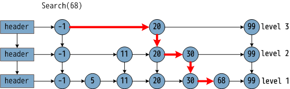
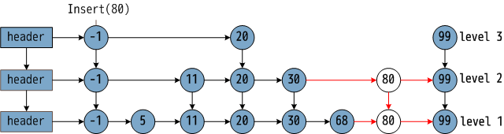
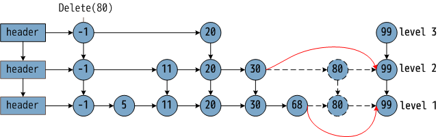

Redis 数据结构 skiplist
概述
跳表（skiplist）是一个特俗的链表，相比一般的链表，有更高的查找效率，其效率可比拟于二叉查找树。
一张关于跳表和跳表搜索过程如下图：

在图中，需要寻找 68，在给出的查找过程中，利用跳表数据结构优势，只比较了 3次，横箭头不比较，竖箭头比较。由此可见，跳表预先间隔地保存了有序链表中的节点，从而在查找过程中能达到类似于二分搜索的效果，而二分搜索思想就是通过比较中点数据放弃另一半的查找，从而节省一半的查找时间。
缺点即浪费了空间，自古空间和时间两难全。
插播一段：跳表在 1990年由 William Pugh 提出，而红黑树早在 1972年由鲁道夫·贝尔发明了。红黑树在空间和时间效率上略胜跳表一筹，但跳表实现相对简单得到程序猿们的青睐。redis 和 leveldb 中都有采用跳表。
这篇文章，借着 redis 的源码了解跳表的实现。

从上图中，总结跳表的性质：
- 由很多层结构组成
- 每一层都是一个有序的链表
- 最底层(Level 1)的链表包含所有元素
- 如果一个元素出现在 Level i 的链表中，则它在 Level i 之下的链表也都会出现。
- 每个节点包含两个指针，一个指向同一链表中的下一个元素，一个指向下面一层的元素。
redis 中跳表数据结构定义：
// 跳表节点结构体
/* ZSETs use a specialized version of Skiplists */
typedef struct zskiplistNode {
// 节点数据
robj *obj;
// 分数，游戏分数？按游戏分数排序
double score;
// 后驱指针
struct zskiplistNode *backward;
// 前驱指针数组 TODO
struct zskiplistLevel {
struct zskiplistNode *forward;
// 调到下一个数据项需要走多少步，这在计算 rank 的非常有帮助
unsigned int span;
} level[];
} zskiplistNode;
typedef struct zskiplist {
// 跳表头尾指针
struct zskiplistNode *header, *tail;
// 跳表的长度
unsigned long length;
// 跳表的高度
int level;
} zskiplist;
特别的，在上图中似乎每个数据都被保存了多次，其实只保存了一次。在 struct zskiplistNode 中数据和指针是分开存储的，struct zskiplistLevel 即是一个描述跳表层级的数据结构。
我们可以看到，一个节点主要由有一个存储真实数据的指针，一个后驱指针，和多个前驱指针。
TODO 可以在这里插入一张表跳表实际数据结构的示意图
跳表的插入
跳表算法描述如下：找出每一层新插入数据位置的前驱并保存，在 redis 中跳表插入是根据 score/member 的大小（看不懂可以参看 redis ZADD 命令）来决定插入的位置；将新数据插入到指定位置，并调整指针，在 redis 中还会调整 span。
什么是 span？

span 即从两个相邻节点间隔了多少节点。譬如 level 1，-1 的 span 就是 1；level 2，-1 的 span 为 2。
因为新出入数据的层数是随机的，有两种情况：
- 小于等于原有的层数
- 大于原有的层数。需要做特殊处理。
1）小于等于原有的层数

redis 中跳表插入算法的具体实现：
zskiplistNode *zslInsert(zskiplist *zsl, double score, robj *obj) {
// update 是插入节点所在位置的前一个节点。我们在学习链表插入的时候，需要找到插入
// 位置的前一个节点。因为在跳表中一个节点是有多个前驱指针的，所以这里需要保存的
// 是多个节点，而不是一个节点
zskiplistNode *update[ZSKIPLIST_MAXLEVEL], *x;
unsigned int rank[ZSKIPLIST_MAXLEVEL];
int i, level;
redisAssert(!isnan(score));
x = zsl->header;
// 遍历 skiplist 中所有的层，找到数据将要插入的位置，并保存在 update 中
for (i = zsl->level-1; i >= 0; i--) {
/* store rank that is crossed to reach the insert position */
rank[i] = i == (zsl->level-1) ? 0 : rank[i+1];
// 链表的搜索
while (x->level[i].forward &&
(x->level[i].forward->score < score ||
(x->level[i].forward->score == score &&
compareStringObjects(x->level[i].forward->obj,obj) < 0))) {
rank[i] += x->level[i].span;
x = x->level[i].forward;
}
// update[i] 记录了新数据项的前驱
update[i] = x;
}
// random 一个 level，是随机的
/* we assume the key is not already inside, since we allow duplicated
* scores, and the re-insertion of score and redis object should never
* happen since the caller of zslInsert() should test in the hash table
* if the element is already inside or not. */
level = zslRandomLevel();
// random level 比原有的 zsl->level 大，需要增加 skiplist 的 level
if (level > zsl->level) {
for (i = zsl->level; i < level; i++) {
rank[i] = 0;
update[i] = zsl->header;
update[i]->level[i].span = zsl->length;
}
zsl->level = level;
}
// 插入
x = zslCreateNode(level,score,obj);
for (i = 0; i < level; i++) {
// 新节点项插到 update[i] 的后面
x->level[i].forward = update[i]->level[i].forward;
update[i]->level[i].forward = x;
/* update span covered by update[i] as x is inserted here */
x->level[i].span = update[i]->level[i].span - (rank[0] - rank[i]);
update[i]->level[i].span = (rank[0] - rank[i]) + 1;
}
// 更高的 level 尚未调整 span
/* increment span for untouched levels */
for (i = level; i < zsl->level; i++) {
update[i]->level[i].span++;
}
// 调整新节点的后驱指针
x->backward = (update[0] == zsl->header) ? NULL : update[0];
if (x->level[0].forward)
x->level[0].forward->backward = x;
else
zsl->tail = x;
// 调整 skiplist 的长度
zsl->length++;
return x;
}
跳表的删除
跳表的删除算和插入算法步骤类似：找出每一层需删除数据的前驱并保存；接着调整指针，在 redis 中还会调整 span。

redis 中跳表删除算法的具体实现：
// x 是需要删除的节点
// update 是 每一个层 x 的前驱数组
/* Internal function used by zslDelete, zslDeleteByScore and zslDeleteByRank */
void zslDeleteNode(zskiplist *zsl, zskiplistNode *x, zskiplistNode **update) {
int i;
// 调整 span 和 forward 指针
for (i = 0; i < zsl->level; i++) {
if (update[i]->level[i].forward == x) {
update[i]->level[i].span += x->level[i].span - 1;
update[i]->level[i].forward = x->level[i].forward;
} else {
// update[i]->level[i].forward == NULL，只调整 span
update[i]->level[i].span -= 1;
}
}
// 调整后驱指针
if (x->level[0].forward) {
x->level[0].forward->backward = x->backward;
} else {
zsl->tail = x->backward;
}
// 删除某一个节点后，层数 level 可能降低，调整 level
while(zsl->level > 1 && zsl->header->level[zsl->level-1].forward == NULL)
zsl->level--;
// 调整跳表的长度
zsl->length--;
}
Redis 中的跳表
redis 中结合跳表（skiplist）和哈希表（dict）形成一个新的数据结构 zset。添加 dict 是为了快速定位跳表中是否存在某个 member！
typedef struct zset {
dict *dict;
zskiplist *zsl;
} zset;
Redis 选用 skiplist 场景
ZXX 命令是针对有序集合（sorted set）的，譬如：
ZADD
ZCARD
ZCOUNT
ZINCRBY
ZINTERSTORE
ZLEXCOUNT
ZRANGE
ZRANGEBYLEX
ZRANGEBYSCORE
ZRANK
ZREM
ZREMRANGEBYLEX
ZREMRANGEBYRANK
ZREMRANGEBYSCORE
ZREVRANGE
ZREVRANGEBYSCORE
ZREVRANK
ZSCAN
ZSCORE
ZUNIONSTORE